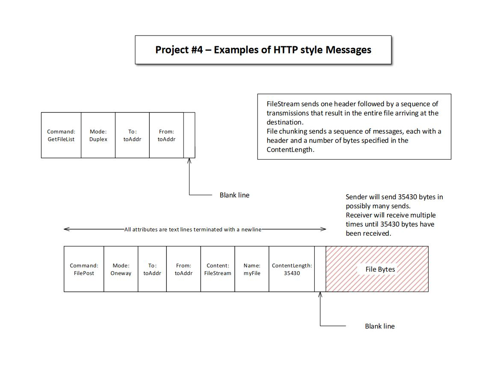

Figure 5. - Message Structure
Messages consist of a header, composed of text lines, and an optional body, that may contain binary bytes.
This is the style originated by the HTTP protocol.
Our messages may not follow exactly the HTTP protocol,
but they are very similar. Each header has a command and a set of attributes. The end of the header is
signaled by a blank line.